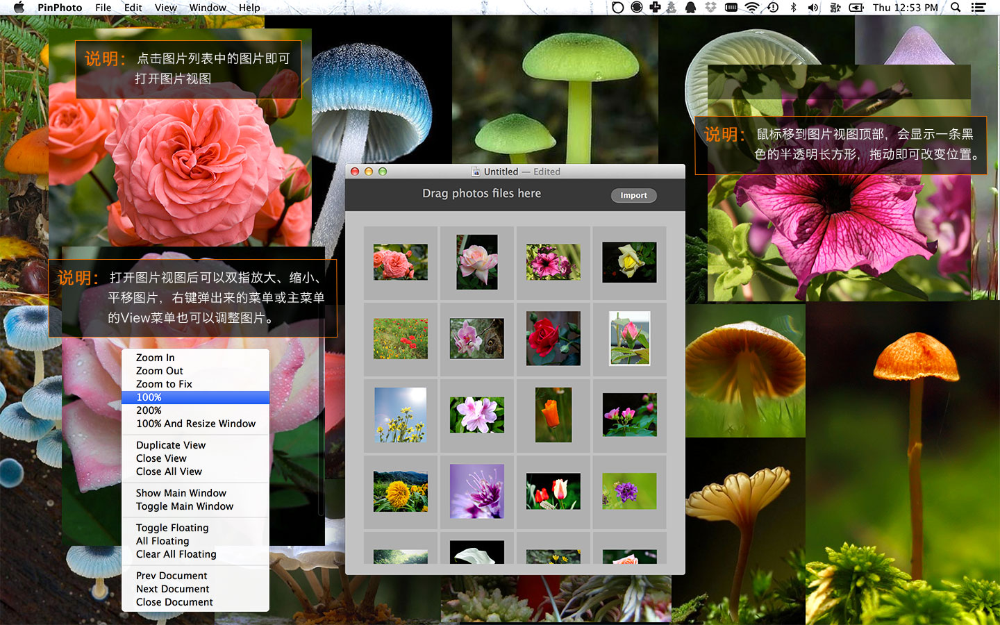

把多张图片摆放到屏幕任何位置并保存成文件，下次打开时恢复之前的状态！
一般使用场景：
经常要看的图片，比如说软件快捷键、库的API、英文生词、常用配色等等摆好在屏幕上以便查看和记忆。
用PS等画画、设计、调照片时，常常会有好几个版本都不错的情况，这时候可以先复制，然后CMD+V粘贴到PinPhoto，然后排出来对比查看！
做设计、UI、画画、角色创作等工作时，用来做资料收集、激发灵感。有时候看电视剧、动漫等会看到不错的想收藏的画面，比如说某场景色彩太带感、某妹子的饰品或发型不错等，总之是看到觉得要收集的东西，可以用Control+CMD+Shift+4截屏并存到剪贴板、网页图可以右键Copy Image，然后再转到PinPhoto新建或打开文档，再CMD+V导入。然后就可以把图排出来并对比查看或找灵感啦！
看美图和妹子等娱乐用：
多收集一些美图或妹子图，并排好。比如说一类风景一个文档或者一类妹子一个文档或多个文档。写代码累了就切过来看看。已设定左右键切换打开的文档，所以可以轻松换着看。

软件用途和使用方法
新建PinPhoto文档和导入图片
CMD+N新建PinPhoto文档，使用拖拽或者点Import按钮增加要摆放的图片，如果你的剪切板上复制有图片，也可以直接用CMD+V粘贴进来。

小技巧：在网页中看到喜欢的图片想增加到PinPhoto文档中，可以右键网页中的图片，在弹出的菜单中选择：复制图片(Copy Image) 然后切换到PinPhoto，用快捷键CMD+V粘贴以增加到PinPhoto的文档中。
打开并摆放导入的图片
点击列表中的图片即可打开该图片的图片视图，在打开的图片视图中，鼠标移到图片顶部的位置，会显示一条黑色的半透明长方形，拖动即可改变位置，你也可以用双指缩放、平移图片，更多的调节请用右键菜单、主菜单的View菜单或者快捷键。

右键菜单项目说明：
- Zoom In：放大图片 -
CMD+= - Zoom Out：缩小图片 -
CMD+- - Zoom to Fix：缩小图片至窗口大小 -
CMD+9 - 100%：图片实际大小 -
CMD+0 - 200%：图片实际大小的2倍 -
CMD+8 - 100% And Resize Window：设定图片为实际大小，窗口也设置为和图片一样大小。
- Duplicate View：另开一个图片视图
- Colse View：关闭图片视图 -
CMD+W - Close All View：关闭当前文档的所有图片视图
- Show Main Window：显示主窗口 -
CMD+F - Toggle Main Window：显示/隐藏主窗口 -
CMD+D - Toggle Floating：置顶/取消置顶图片视图 -
CMD+T - All Floating：全部置顶当前文档的所有图片视图 -
CMD+Shift+T - Clear All Floating：全部取消置顶当前文档的所有图片视图 -
CMD+Option+T - Prev Document：切换到上一打开的文档 -
⇤ - Next Document：切换到下一打开的文档 -
⇥ - Close Document：关闭当前文档 -
CMD+Shift+W
另外也可以在主窗口中右键打开多张图片，有个实用的功能为：自动排列图片。选择要自动排列的图片，右键，并选Open & Placement Selected Photos，则会把您选择的图片自动排满整个屏幕。如下图。
右键菜单项目说明：
- Open Selected Photos View：打开所选择的图片的图片视图
- Open & Placement Selected Photos：把选择的图片自动排满整个屏幕
- Close Selected Photos View：关闭所选择的图片的图片视图
- Close All View：关闭当前文档的所有图片视图
- Deselect All：取消全选
- Select All：全选
- Delete：删除所选的图片 -
CMD+Delete - Hide Main Window：隐藏主窗口
- All Floating：全部置顶当前文档的所有图片视图 -
CMD+Shift+T - Clear All Floating：全部取消置顶当前文档的所有图片视图 -
CMD+Option+T - Prev Document：切换到上一打开的文档 -
⇤ - Next Document：切换到下一打开的文档 -
⇥
置顶图片
选中图片视图后，可以用CMD+T或者右键选择菜单来置顶图片，图片置顶后，当你切换到其它程序时，会一直显示。经典的使用场景是对着图片画画。再按CMD+T则会取消置顶。也可以用CMD+Shift+T来置顶当前文档中的所有图片视图。用CMD+Option+T来取消置顶所有图片视图
隐藏主窗口
主窗口有时候非常影响观看摆好的图片，可以用CMD+D来显示/隐藏主窗口，CMD+F会直接显示主窗口。

切换打开的PinPhoto文档
可以使用键盘的向左向右键切换在PinPhoto中打开的文档，也可以用Window菜单切换。
用得不爽或者有功能上的建议？
请直接 Help --> Send Feedback 发信给我。或者微薄私信我：@oulvhai